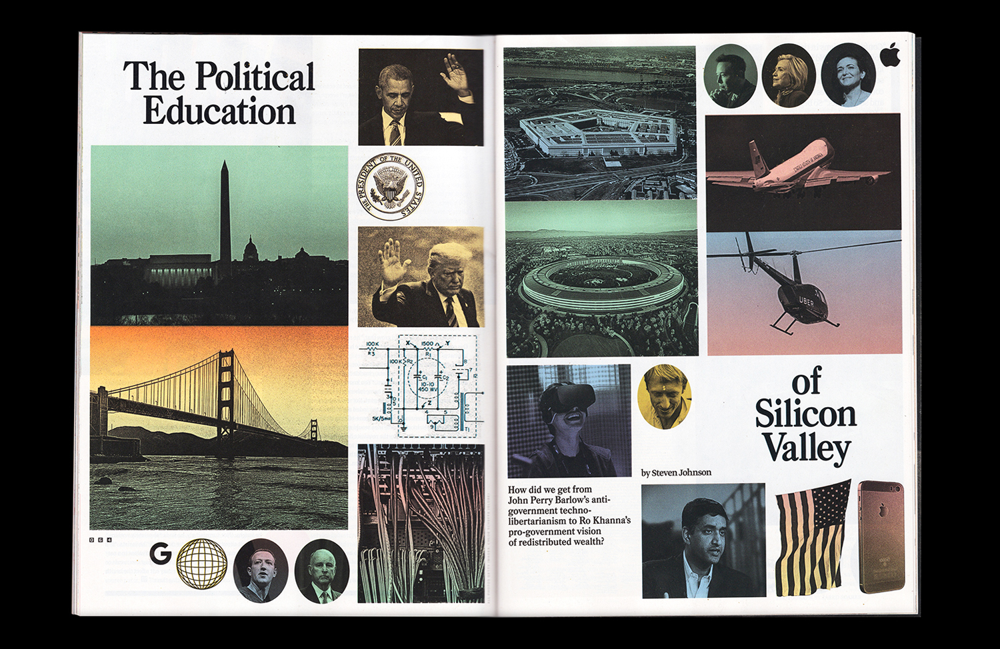
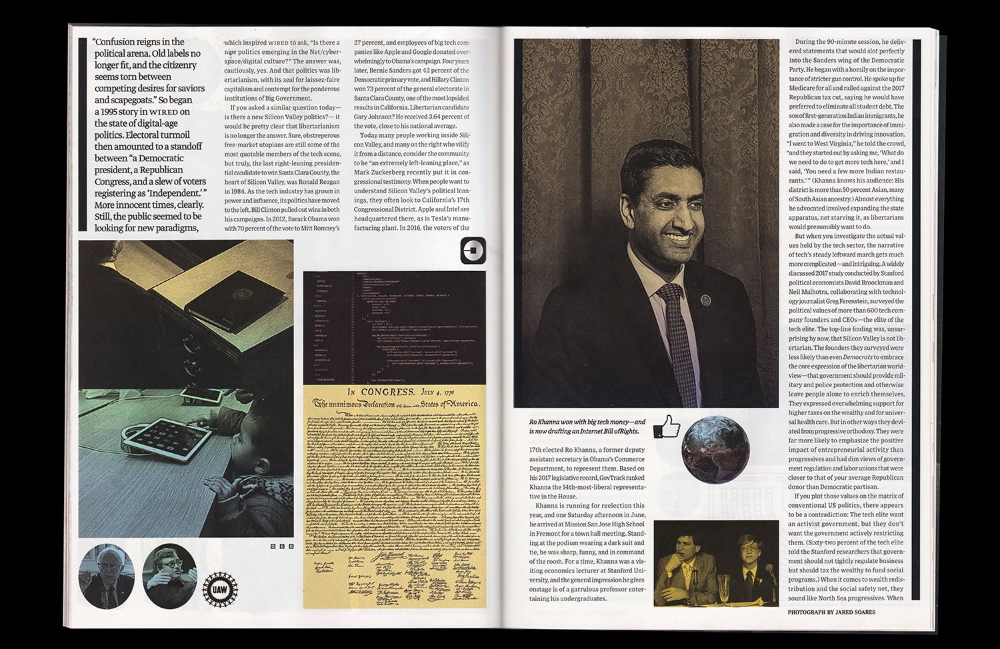
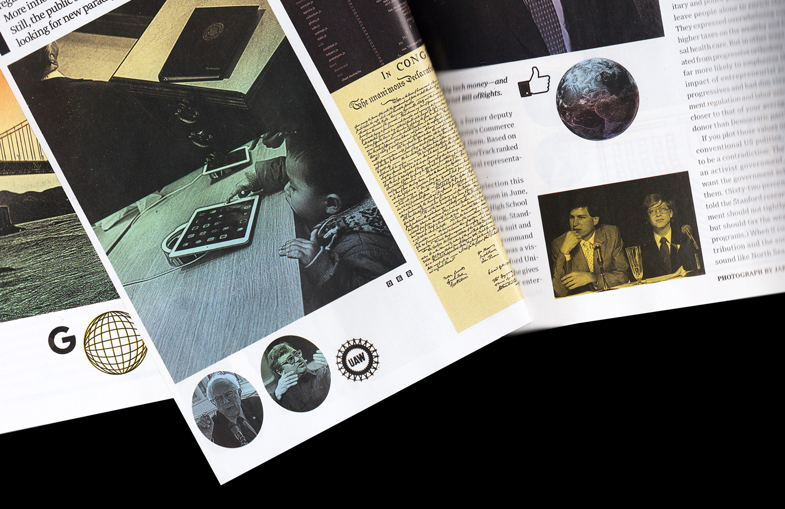
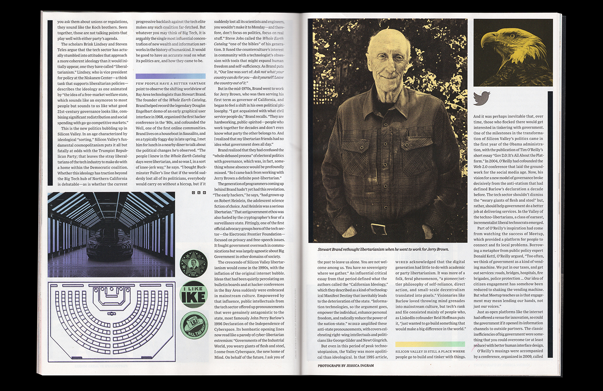
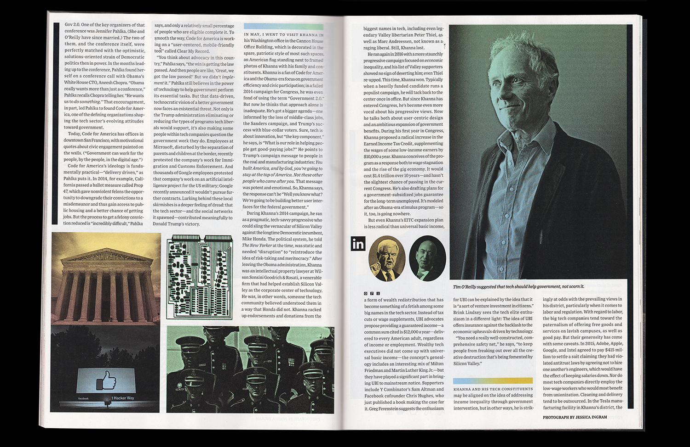
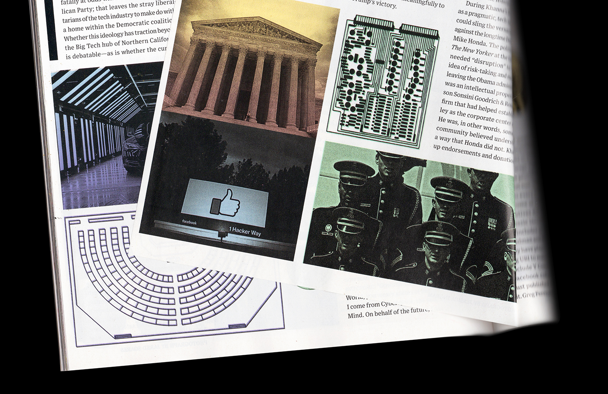
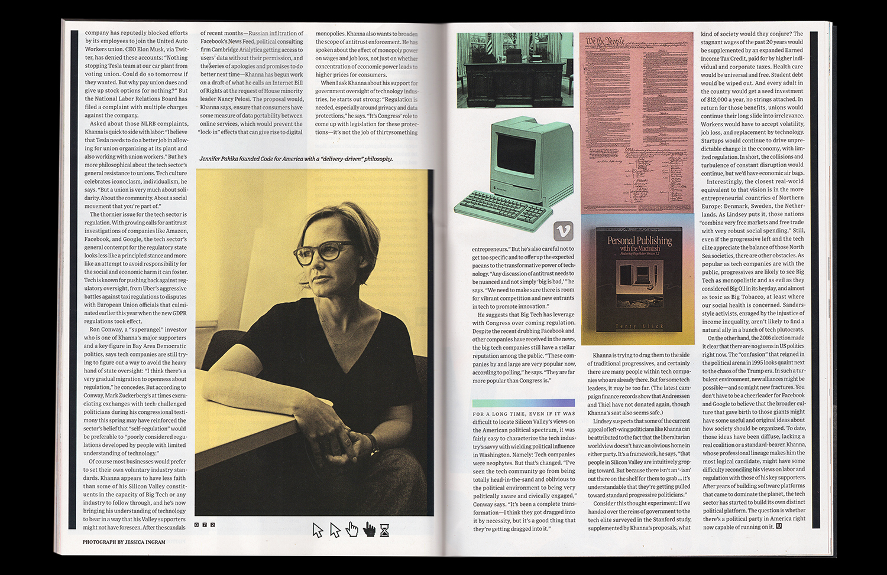

The Political Education of Silicon Valley
Wired
Feature, August 2018 issue
2018
Feature design and photo illustration throughout. Stewart Brand, the man behind the Whole Earth Catalog, is a talking head in the story, and inspired the design. My twist was the political-technological mashups—D.C. vs. S.F., the president’s desk vs. a desktop computer, the constitution vs. code, etc.

